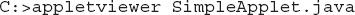

Chapter 15
Applets, Events, and Miscellaneous Topics
Key Skills & Concepts
 Understand applet basics
Understand applet basics Know the applet architecture
Create an applet skeleton
Initialize and terminate applets
Repaint applets
Output to the status window
Pass parameters to an applet
Know the Applet class
Understand the delegation event model
Use the delegation event model
Know the remaining Java keywords
Teaching the elements of the Java language is the primary goal of this book, and in this regard, we are nearly finished. The preceding 14 chapters have focused on the features of Java defined by the language, such as its keywords, syntax, block structure, type conversion rules, and so on. At this point, you have enough knowledge to write sophisticated, useful Java programs. However, there are two fundamental parts of Java programming that are not defined by keywords, but by API classes and specialized techniques. These are applets and events.
Be forewarned: The topics of applets and event handling are very large. Full and detailed coverage of either is well beyond the scope of this book. Here, you will learn their fundamentals and see several examples, but we will only scratch the surface. After finishing this chapter, however, you will have a foundation upon which to build your knowledge.
This chapter ends with a description of the remaining Java keywords, such as instanceof and native, that have not been described elsewhere in this book. These keywords are used for more advanced programming, but they are summarized here for completeness.
Applet Basics
Applets differ from the type of programs shown in the preceding chapters. As mentioned in Chapter 1, applets are small programs that are designed for transmission over the Internet and run within a browser. Because Java’s virtual machine is in charge of executing all Java programs, including applets, applets offer a reasonably secure way to dynamically download and execute programs over the Web.
Before we begin, it is necessary to explain two general varieties of applets: those based on the Abstract Window Toolkit (AWT) and those based on Swing. Both the AWT and Swing support the creation of a graphical user interface (GUI). The AWT is the original GUI toolkit and Swing is a lightweight alternative. This chapter describes AWT-based applets. (Swing is introduced in Chapter 16.) It is important to understand, however, that Swing-based applets are built upon the same basic architecture as AWT-based applets. Furthermore, Swing is built on top of the AWT. Therefore, the information and techniques presented here describe the foundation of applet programming and most of it applies to both types of applets.
Prior to discussing any theory or details, let’s begin by examining a simple applet. It performs one function: It displays the string "Java makes applets easy." inside a window.
This applet begins with two import statements. The first imports the Abstract Window Toolkit classes. AWT-based applets interact with the user through the AWT, not through the console-based I/O classes. The AWT contains support for a limited window-based, graphical user interface. As you might expect, it is quite large and sophisticated. A complete discussion of it would require a book of its own. Fortunately, since we will be creating only very simple applets, we will make only limited use of the AWT. The next import statement imports the applet package. This package contains the class Applet. Every AWT-based applet that you create must be a subclass of Applet.
The next line in the program declares the class SimpleApplet. This class must be declared as public because it will be accessed by outside code.
Inside SimpleApplet, paint( ) is declared. This method is defined by the AWT Component class (which is a superclass of Applet) and is overridden by the applet. paint( ) is called each time the applet must redisplay its output. This can occur for several reasons. For example, the window in which the applet is running can be overwritten by another window and then uncovered. Or the applet window can be minimized and then restored. paint( ) is also called when the applet begins execution. Whatever the cause, whenever the applet must redraw its output, paint( ) is called. The paint( ) method has one parameter of type Graphics. This parameter will contain the graphics context, which describes the graphics environment in which the applet is running. This context is used whenever output to the applet is required.
Inside paint( ), there is a call to drawString( ), which is a member of the Graphics class. This method outputs a string beginning at the specified X,Y location. It has the following general form:
void drawString(String message, int x, int y)
Here, message is the string to be output beginning at x,y. In a Java window, the upper-left corner is location 0,0. The call to drawString( ) in the applet causes the message to be displayed beginning at location 20,20.
Notice that the applet does not have a main( ) method. Unlike the programs shown earlier in this book, applets do not begin execution at main( ). In fact, most applets don’t even have a main( ) method. Instead, an applet begins execution when the name of its class is passed to a browser or other applet-enabled program.
After you have entered the source code for SimpleApplet, you compile in the same way that you have been compiling programs. However, running SimpleApplet involves a different process. There are two ways in which you can run an applet: inside a browser or with a special development tool that displays applets. The tool provided with the standard Java JDK is called appletviewer, and we will use it to run the applets developed in this chapter. Of course, you can also run them in your browser, but the appletviewer is much easier to use during development.
NOTE
Beginning with the release of Java 7, update 21, Java applets must be signed to prevent security warnings when run in a browser. In fact, in some cases, the applet may be prevented from running. Applets stored in the local file system, such as you would create when compiling the examples in this book, are especially sensitive to this change. You may need to adjust the security settings in the Java Control Panel to run a local applet in a browser. At the time of this writing, Oracle recommends against the use of local applets, recommending instead that applets be executed through a web server. Furthermore, unsigned local applets may be (probably will be) blocked from execution in the future. In general, for applets that will be distributed via the Internet, such as commercial applications, signing is a virtual necessity. The concepts and techniques required to sign applets (and other types of Java programs) are beyond the scope of this book. However, extensive information is found on Oracle’s website. Finally, as mentioned, the easiest way to try the applet examples is to use appletviewer.
One way to execute an applet (in either a Web browser or the appletviewer) is to write a short HTML text file that contains a tag that loads the applet. At the time of this writing, Oracle recommends using the APPLET tag for this purpose. (The OBJECT tag can also be used, and other deployment strategies are available. Consult the Java documentation for the latest information.) Using the APPLET tag, here is the HTML file that will execute SimpleApplet:
The width and height statements specify the dimensions of the display area used by the applet.
To execute SimpleApplet with an applet viewer, you will execute this HTML file. For example, if the preceding HTML file is called StartApp.html, then the following command line will run SimpleApplet:
Although there is nothing wrong with using a stand-alone HTML file to execute an applet, there is an easier way. Simply include a comment near the top of your applet’s source code file that contains the APPLET tag. If you use this method, the SimpleApplet source file looks like this:
Now you can execute the applet by passing the name of its source file to appletviewer. For example, this command line will now display SimpleApplet:

The window produced by SimpleApplet, as displayed by appletviewer, is shown in the following illustration:
When using appletviewer, keep in mind that it provides the window frame. Applets run in a browser will not have a visible frame.
Let’s review an applet’s key points:
All AWT-based applets are subclasses of Applet.
Applets do not need a main( ) method.
Applets must be run under an applet viewer or a Java-compatible browser.
User I/O is not accomplished with Java’s stream I/O classes. Instead, applets use the interface provided by a GUI framework.
Applet Organization and Essential Elements
Although the preceding applet is completely valid, such a simple applet is of little value. Before you can create useful applets, you need to know more about how applets are organized, what methods they use, and how they interact with the run-time system.
The Applet Architecture
As a general rule, an applet is a GUI-based program. As such, its architecture is different from the console-based programs shown in the first part of this book. If you are familiar with GUI programming, you will be right at home writing applets. If not, then there are a few key concepts you must understand.
First, applets are event driven, and an applet resembles a set of interrupt service routines. Here is how the process works. An applet waits until an event occurs. The run-time system notifies the applet about an event by calling an event handler that has been provided by the applet. Once this happens, the applet must take appropriate action and then quickly return control to the system. This is a crucial point. For the most part, your applet should not enter a “mode” of operation in which it maintains control for an extended period. Instead, it must perform specific actions in response to events and then return control to the run-time system. In those situations in which your applet needs to perform a repetitive task on its own (for example, displaying a scrolling message across its window), you must start an additional thread of execution.
Second, it is the user who initiates interaction with an applet—not the other way around. In a console-based program, when the program needs input, it will prompt the user and then call some input method. This is not the way it works in an applet. Instead, the user interacts with the applet as he or she wants, when he or she wants. These interactions are sent to the applet as events to which the applet must respond. For example, when the user clicks a mouse inside the applet’s window, a mouse-clicked event is generated. If the user presses a key while the applet’s window has input focus, a keypress event is generated. Applets can contain various controls, such as push buttons and check boxes. When the user interacts with one of these controls, an event is generated.
While the architecture of an applet is not as easy to understand as that of a console-based program, Java makes it as simple as possible. If you have written programs for Windows (or another GUI-based operating system), you know how intimidating that environment can be. Fortunately, Java provides a much cleaner approach that is more quickly mastered.
A Complete Applet Skeleton
Although SimpleApplet shown earlier is a real applet, it does not contain all of the elements required by most applets. Actually, all but the most trivial applets override a set of methods that provide the basic mechanism by which the browser or applet viewer interfaces to the applet and controls its execution. These life-cycle methods are init( ), start( ), stop( ), and destroy( ), and they are defined by Applet. A fifth method, paint( ), is commonly overridden by AWT-based applets even though it is not a life-cycle method. It is inherited from the AWT Component class. Since default implementations for all of these methods are provided, applets do not need to override those methods they do not use. These four life-cycle methods plus paint( ) can be assembled into the skeleton shown here:
Although this skeleton does not do anything, it can be compiled and run. Thus, it can be used as a starting point for applets that you create.
NOTE
Overriding paint( ) applies mostly to AWT-based applets. Swing applets use a different painting mechanism.
Applet Initialization and Termination
It is important to understand the order in which the various methods shown in the skeleton are executed. When an applet begins, the following methods are called in this sequence:
1. init( )
2. start( )
3. paint( )
When an applet is terminated, the following sequence of method calls takes place:
1. stop( )
2. destroy( )
Let’s look more closely at these methods.
The init( ) method is the first method to be called. In init( ) your applet will initialize variables and perform any other startup activities.
The start( ) method is called after init( ). It is also called to restart an applet after it has been stopped, such as when the user returns to a previously displayed web page that contains an applet. Thus, start( ) might be called more than once during the life cycle of an applet.
The paint( ) method is called each time an AWT-based applet’s output must be redrawn and was described earlier.
When the page containing your applet is left, the stop( ) method is called. You will use stop( ) to suspend any child threads created by the applet and to perform any other activities required to put the applet in a safe, idle state. Remember, a call to stop( ) does not mean that the applet should be terminated because it might be restarted with a call to start( ) if the user returns to the page.
The destroy( ) method is called when the applet is no longer needed. It is used to perform any shutdown operations required of the applet.
Requesting Repainting
As a general rule, an AWT-based applet writes to its window only when its paint( ) method is called by the run-time system. This raises an interesting question: How can the applet itself cause its window to be updated when its information changes? For example, if an applet is displaying a moving banner, what mechanism does the applet use to update the window each time this banner scrolls? Remember that one of the fundamental architectural constraints imposed on an applet is that it must quickly return control to the Java run-time system. It cannot create a loop inside paint( ) that repeatedly scrolls the banner, for example. This would prevent control from passing back to the run-time system. Given this constraint, it may seem that output to your applet’s window will be difficult at best. Fortunately, this is not the case. Whenever your applet needs to update the information displayed in its window, it simply calls repaint( ).
The repaint( ) method is defined by the AWT’s Component class. It causes the run-time system to execute a call to your applet’s paint( ) method. Thus, for another part of your applet to output to its window, simply store the output and then call repaint( ). This causes a call to paint( ), which can display the stored information. For example, if part of your applet needs to output a string, it can store this string in a String variable and then call repaint( ). Inside paint( ), you will output the string using drawString( ).
The simplest version of repaint( ) is shown here:
void repaint( )
This version causes the entire window to be repainted.
Another version of repaint( ) specifies a region that will be repainted:
void repaint(int left, int top, int width, int height)
Ask the Expert
Q: Is it possible for a method other than paint( ) or update( ) to output to an applet’s window?
A: Yes. To do so, you must obtain a graphics context by calling getGraphics( ) (defined by Component) and then use this context to output to the window. However, for most AWT-based applications, it is better and easier to route window output through paint( ) and to call repaint( ) when the contents of the window change.
Here, the coordinates of the upper-left corner of the region are specified by left and top, and the width and height of the region are passed in width and height. These dimensions are specified in pixels. You save time by specifying a region to repaint because window updates are costly in terms of time. If you only need to update a small portion of the window, it is more efficient to repaint only that region.
An example that demonstrates repaint( ) is found in Try This 15-1.
The update( ) Method
There is another method that relates to repainting called update( ) that your applet may want to override. This method is defined by the Component class, and it is called when your applet has requested that a portion of its window be redrawn. The default version of update( ) simply calls paint( ). However, you can override the update( ) method so that it performs more subtle repainting, but this is an advanced technique that is beyond the scope of this book. Also, overriding update( ) applies only to AWT-based applets.
| Try This 15-1 |
A Simple Banner Applet |
To demonstrate repaint( ), a simple banner applet is presented. This applet scrolls a message, from right to left, across the applet’s window. Since the scrolling of the message is a repetitive task, it is performed by a separate thread, created by the applet when it is initialized. Banners are popular Web features, and this project shows how to use a Java applet to create one.
1. Create a file called Banner.java.
2. Begin creating the banner applet with the following lines:
Notice that Banner extends Applet, as expected, but it also implements Runnable. This is necessary since the applet will be creating a second thread of execution that will be used to scroll the banner. The message that will be scrolled in the banner is contained in the String variable msg. A reference to the thread that runs the applet is stored in t. The Boolean variable stopFlag is used to stop the applet. Inside init( ), the thread reference variable t is set to null.
3. Add the start( ) method shown next:
The run-time system calls start( ) to start the applet running. Inside start( ), a new thread of execution is created and assigned to the Thread variable t. Then, stopFlag is set to false. Next, the thread is started by a call to t.start( ). Remember that t.start( ) calls a method defined by Thread, which causes run( ) to begin executing. It does not cause a call to the version of start( ) defined by Applet. These are two separate methods.
4. Add the run( ) method, as shown here:
In run( ), a call to repaint( ) is made. This eventually causes the paint( ) method to be called, and the rotated contents of msg are displayed. Between each iteration, run( ) sleeps for a quarter of a second. The net effect of run( ) is that the contents of msg are scrolled right to left in a constantly moving display. The stopFlag variable is checked on each iteration. When it is true, the run( ) method terminates.
5. Add the code for stop( ) and paint( ), as shown here:
If a browser is displaying the applet when a new page is viewed, the stop( ) method is called, which sets stopFlag to true, causing run( ) to terminate. It also sets t to null. Thus, there is no longer a reference to the Thread object, and it can be recycled the next time the garbage collector runs. This is the mechanism used to stop the thread when its page is no longer in view. When the applet is brought back into view, start( ) is once again called, which starts a new thread to execute the banner. Inside paint( ), the message is rotated and then displayed.
6. The entire banner applet is shown here:
Sample output is shown here:
Using the Status Window
In addition to displaying information in its window, an applet can also output a message to the status window of the browser or applet viewer on which it is running. To do so, call showStatus( ), which is defined by Applet, with the string that you want displayed. The general form of showStatus( ) is shown here:
void showStatus(String msg)
Here, msg is the string to be displayed.
The status window is a good place to give the user feedback about what is occurring in the applet, suggest options, or possibly report some types of errors. The status window also makes an excellent debugging aid, because it gives you an easy way to output information about your applet.
The following applet demonstrates showStatus( ):
Sample output from this program is shown here:
Passing Parameters to Applets
You can pass parameters to your applet. To do so, use the PARAM attribute of the APPLET tag, specifying the parameter’s name and value. To retrieve a parameter, use the getParameter( ) method, defined by Applet. Its general form is shown here:
String getParameter(String paramName)
Here, paramName is the name of the parameter. It returns the value of the specified parameter in the form of a String object. Thus, for numeric and boolean values, you will need to convert their string representations into their internal formats. If the specified parameter cannot be found, null is returned. Therefore, be sure to confirm that the value returned by getParameter( ) is valid. Also, check any parameter that is converted into a numeric value, confirming that a valid conversion took place.
Here is an example that demonstrates passing parameters:
Sample output from this program is shown here:
The Applet Class
As mentioned, all AWT-based applets are subclasses of the Applet class. Applet inherits the following superclasses defined by the AWT: Component, Container, and Panel. Thus, an applet has access to the full functionality of the AWT.
In addition to the methods described in the preceding sections, Applet contains several others that give you detailed control over the execution of your applet. All of the methods defined by Applet are shown in Table 15-1.
Table 15-1 The Methods Defined by Applet
Event Handling
In Java, GUI programs, such as applets, are event driven. Thus, event handling is at the core of successful GUI programming. Most events to which your program will respond are generated by the user. These events are passed to your program in a variety of ways, with the specific method depending upon the actual event. There are several types of events, including those generated by the mouse, the keyboard, and various controls, such as a push button. AWT-based events are supported by the java.awt.event package.
Before we start, it must be mentioned that it is not possible to fully discuss Java’s event handling mechanism. Event handling is a large topic with many special features and attributes, and a complete discussion is well beyond the scope of this book. However, the overview presented here will help you get started.
The Delegation Event Model
The modern approach to handling events is based on the delegation event model. The delegation event model defines standard and consistent mechanisms to generate and process events. Its concept is quite simple: a source generates an event and sends it to one or more listeners. In this scheme, the listener simply waits until it receives an event. Once received, the listener processes the event and then returns. The advantage of this design is that the logic that processes events is cleanly separated from the user interface logic that generates those events. A user interface element is able to “delegate” the processing of an event to a separate piece of code. In the delegation event model, listeners must register with a source in order to receive an event notification.
Events
In the delegation model, an event is an object that describes a state change in a source. Among other reasons, an event can be generated as a consequence of a person interacting with the elements in a graphical user interface, such as pressing a button, entering a character via the keyboard, selecting an item in a list, and clicking the mouse.
Event Sources
An event source is an object that generates an event. A source must register listeners in order for the listener to receive notifications about a specific type of event. Each type of event has its own registration method. Here is the general form:
public void addTypeListener(TypeListener el)
Here, Type is the name of the event, and el is a reference to the event listener. For example, the method that registers a keyboard event listener is called addKeyListener( ). The method that registers a mouse motion listener is called addMouseMotionListener( ). When an event occurs, all registered listeners are notified and receive a copy of the event object.
A source must also provide a method that allows a listener to unregister an interest in a specific type of event. The general form of such a method is this:
public void removeTypeListener(TypeListener el)
Here, Type is the name of the event, and el is a reference to the event listener. For example, to remove a keyboard listener, you would call removeKeyListener( ).
The methods that add or remove listeners are provided by the source that generates events. For example, the Component class provides methods to add and remove keyboard and mouse event listeners.
Event Listeners
A listener is an object that is notified when an event occurs. It has two major requirements. First, it must have been registered with one or more sources to receive notifications about specific types of events. Second, it must implement methods to receive and process these notifications.
The methods that receive and process AWT events are defined in a set of interfaces, such as those found in java.awt.event. For example, the MouseMotionListener interface defines methods that receive notifications when the mouse is dragged or moved. Any object may receive and process one or both of these events if it provides an implementation of this interface.
Event Classes
The classes that represent events are at the core of Java’s event handling mechanism. At the root of the Java event class hierarchy is EventObject, which is in java.util. It is the superclass for all events. The class AWTEvent, defined within the java.awt package, is a subclass of EventObject. It is the superclass (either directly or indirectly) for all AWT-based events used by the delegation event model.
The package java.awt.event defines several types of events that are generated by various user interface elements. Table 15-2 enumerates several commonly used ones and provides a brief description of when they are generated.
Table 15-2 Commonly Used Event Classes in java.awt.event
Event Listener Interfaces
Event listeners receive event notifications. Listeners for AWT-based events are created by implementing one or more of the interfaces defined by the java.awt.event package. When an event occurs, the event source invokes the appropriate method defined by the listener and provides an event object as its argument. Table 15-3 lists several commonly used listener interfaces and provides a brief description of the methods they define.
Table 15-3 Commonly Used Event Listener Interfaces
Using the Delegation Event Model
Now that you have had an overview of the delegation event model and its various components, it is time to see it in practice. Applet programming using the delegation event model is actually quite easy. Just follow these two steps:
1. Implement the appropriate interface in the listener so that it will receive the type of event desired.
2. Implement code to register and unregister (if necessary) the listener as a recipient for the event notifications.
Remember that a source may generate several types of events. Each event must be registered separately. Also, an object may register to receive several types of events, but it must implement all of the interfaces that are required to receive these events.
To see how the delegation model works in practice, we will look at an example that handles one of the most commonly used event generators: the mouse. The example will show how to handle the basic mouse and mouse motion events. (Note that it is also possible to handle mouse wheel events, but this is left to you as an exercise.)
Handling Mouse and Mouse Motion Events
To handle mouse and mouse motion events, you must implement the MouseListener and the MouseMotionListener interfaces. The MouseListener interface defines five methods. If a mouse button is clicked, mouseClicked( ) is invoked. When the mouse enters a component, the mouseEntered( ) method is called. When it leaves, mouseExited( ) is called. The mousePressed( ) and mouseReleased( ) methods are invoked when a mouse button is pressed and released, respectively. The general forms of these methods are shown here:
void mouseClicked(MouseEvent me)
void mouseEntered(MouseEvent me)
void mouseExited(MouseEvent me)
void mousePressed(MouseEvent me)
void mouseReleased(MouseEvent me)
The MouseMotionListener interface defines two methods. The mouseDragged( ) method is called multiple times as the mouse is dragged. The mouseMoved( ) method is called multiple times as the mouse is moved. Their general forms are shown here:
void mouseDragged(MouseEvent me)
void mouseMoved(MouseEvent me)
The MouseEvent object passed in me describes the event. MouseEvent defines a number of methods that you can use to get information about what happened. Possibly the most commonly used methods in MouseEvent are getX( ) and getY( ). These return the X and Y coordinates of the mouse (relative to the window) when the event occurred. Their forms are shown here:
int getX( )
int getY( )
The next example will use these methods to display the current location of the mouse.
A Simple Mouse Event Applet
The following applet demonstrates handling the basic mouse events. It displays the current coordinates of the mouse in the applet’s status window. Each time a button is pressed, the word "Down" is displayed at the location of the mouse pointer. Each time the button is released, the word "Up" is shown. If a button is clicked, the message "Mouse clicked." is displayed in the upper-left corner of the applet display area.
As the mouse enters or exits the applet window, a message is displayed in the upper-left corner of the applet display area. When dragging the mouse, a * is shown, which tracks with the mouse pointer as it is dragged. Notice that the two variables, mouseX and mouseY, store the location of the mouse when a mouse pressed, released, or dragged event occurs. These coordinates are then used by paint( ) to display output at the point of these occurrences.
Ask the Expert
Q: You state that the getX( ) and getY( ) methods defined by MouseEvent return the window-relative coordinates of the mouse. Are there methods that return its screen-relative (that is, absolute) location?
A: Yes. MouseEvent defines methods that obtain the X and Y coordinates of the mouse relative to the screen. They are shown here:
int getXOnScreen( )
int getYOnScreen( )
You might find it interesting to experiment with these methods by substituting them for getX( ) and getY( ) in the MouseEvents applet shown next.
Sample output from this program is shown here:
Let’s look closely at this example. The MouseEvents class extends Applet and implements both the MouseListener and MouseMotionListener interfaces. These two interfaces contain methods that receive and process the various types of mouse events. Notice that the applet is both the source and the listener for these events. This works because Component, which supplies the addMouseListener( ) and addMouseMotionListener( ) methods, is a superclass of Applet. Being both the source and the listener for events is a common situation for applets.
Inside init( ), the applet registers itself as a listener for mouse events. This is done by using addMouseListener( ) and addMouseMotionListener( ), which are members of Component. They are shown here:
void addMouseListener(MouseListener ml)
void addMouseMotionListener(MouseMotionListener mml)
Here, ml is a reference to the object receiving mouse events, and mml is a reference to the object receiving mouse motion events. In this program, the same object is used for both.
The applet then implements all of the methods defined by the MouseListener and MouseMotionListener interfaces. These are the event handlers for the various mouse events. Each method handles its event and then returns.
More Java Keywords
Before concluding this chapter, a few more Java keywords need to be briefly discussed:
transient
volatile
instanceof
native
strictfp
assert
These keywords are most often used in programs more advanced than those found in this book. However, an overview of each is presented so that you will know their purpose.
The transient and volatile Modifiers
The transient and volatile keywords are type modifiers that handle somewhat specialized situations. When an instance variable is declared as transient, then its value need not persist when an object is stored. Thus, a transient field is one that does not affect the persisted state of an object.
The volatile modifier tells the compiler that a variable can be changed unexpectedly by other parts of your program. One of these situations involves multithreaded programs. In a multithreaded program, sometimes two or more threads will share the same variable. For efficiency considerations, each thread can keep its own, private copy of such a shared variable, possibly in a register of the CPU. The real (or master) copy of the variable is updated at various times, such as when a synchronized method is entered. While this approach works fine, there may be times when it is inappropriate. In some cases, all that really matters is that the master copy of a variable always reflects the current state, and that this current state is used by all threads. To ensure this, declare the variable as volatile.
instanceof
Sometimes it is useful to know the type of an object during run time. For example, you might have one thread of execution that generates various types of objects and another thread that processes these objects. In this situation, it might be useful for the processing thread to know the type of each object when it receives it. Another situation in which knowledge of an object’s type at run time is important involves casting. In Java, an invalid cast causes a run-time error. Many invalid casts can be caught at compile time. However, casts involving class hierarchies can produce invalid casts that can only be detected at run time. Because a superclass reference can refer to subclass objects, it is not always possible to know at compile time whether or not a cast involving a superclass reference is valid. The instanceof keyword addresses these types of situations. The instanceof operator has this general form:
objref instanceof type
Here, objref is a reference to an instance of a class, and type is a class or interface type. If the object referred to by objref is of the specified type or can be cast into the specified type, then the instanceof operator evaluates to true. Otherwise, its result is false. Thus, instanceof is the means by which your program can obtain run-time type information about an object.
strictfp
One of the more esoteric keywords is strictfp. When Java 2 was released several years ago, the floating-point computation model was relaxed slightly. Specifically, the new model does not require the truncation of certain intermediate values that occur during a computation. This prevents overflow or underflow in some cases. By modifying a class, method, or interface with strictfp, you ensure that floating-point calculations (and thus all truncations) take place precisely as they did in earlier versions of Java. When a class is modified by strictfp, all of the methods in the class are also strictfp automatically.
assert
The assert keyword is used during program development to create an assertion, which is a condition that is expected to be true during the execution of the program. For example, you might have a method that should always return a positive integer value. You might test this by asserting that the return value is greater than zero using an assert statement. At run time, if the condition actually is true, no other action takes place. However, if the condition is false, then an AssertionError is thrown. Assertions are often used during testing to verify that some expected condition is actually met. They are not usually used for released code.
The assert keyword has two forms. The first is shown here:
assert condition;
Here, condition is an expression that must evaluate to a Boolean result. If the result is true, then the assertion is true and no other action takes place. If the condition is false, then the assertion fails and a default AssertionError object is thrown. For example,
If n is less than or equal to zero, then an AssertionError is thrown. Otherwise, no action takes place.
The second form of assert is shown here:
assert condition : expr;
In this version, expr is a value that is passed to the AssertionError constructor. This value is converted to its string format and displayed if an assertion fails. Typically, you will specify a string for expr, but any non-void expression is allowed as long as it defines a reasonable string conversion.
To enable assertion checking at run time, you must specify the -ea option. For example, to enable assertions for Sample, execute it using this line:
Assertions are quite useful during development because they streamline the type of error checking that is common during testing. But be careful—you must not rely on an assertion to perform any action actually required by the program. The reason is that normally, released code will be run with assertions disabled and the expression in an assertion will not be evaluated.
Native Methods
Although rare, there may occasionally be times when you will want to call a subroutine that is written in a language other than Java. Typically, such a subroutine will exist as executable code for the CPU and environment in which you are working—that is, native code. For example, you may wish to call a native code subroutine in order to achieve faster execution time. Or you may want to use a specialized, third-party library, such as a statistical package. However, since Java programs are compiled to bytecode, which is then interpreted (or compiled on the fly) by the Java run-time system, it would seem impossible to call a native code subroutine from within your Java program. Fortunately, this conclusion is false. Java provides the native keyword, which is used to declare native code methods. Once declared, these methods can be called from inside your Java program just as you call any other Java method.
To declare a native method, precede the method with the native modifier, but do not define any body for the method. For example:
Once you have declared a native method, you must provide the native method and follow a rather complex series of steps in order to link it with your Java code.
Ask the Expert
Q: While we are on the subject of keywords, I have a question about this. I have occasionally noticed a form of this that takes parentheses. For example,
Can you tell me what this does?
A: The form of this that you refer to enables one constructor to invoke another constructor within the same class. The general form of this use of this is shown here:
this(arg-list)
When this( ) is executed, the overloaded constructor that matches the parameter list specified by arg-list is executed first. Then, if there are any statements inside the original constructor, they are executed. The call to this( ) must be the first statement within the constructor. Here is a simple example:
In MyClass, only the first constructor actually assigns a value to a and b. The second constructor simply invokes the first. Therefore, when this statement executes:
the call to MyClass(8) causes this(8, 8) to be executed, which translates into a call to MyClass(8, 8).
Invoking overloaded constructors through this( ) can be useful because it can prevent the unnecessary duplication of code. However, you need to be careful. Constructors that call this( ) will execute a bit slower than those that contain all of their initialization code in-line. This is because the call and return mechanism used when the second constructor is invoked adds overhead. Remember that object creation affects all users of your class. If your class will be used to create large numbers of objects, then you must carefully balance the benefits of smaller code against the increased time it takes to create an object. As you gain more experience with Java, you will find these types of decisions easier to make.
There are two restrictions you need to keep in mind when using this( ). First, you cannot use any instance variable of the constructor’s class in a call to this( ). Second, you cannot use super( ) and this( ) in the same constructor because each must be the first statement in the constructor.
 Chapter 15 Self Test
Chapter 15 Self Test
1. What method is called when an applet first begins running? What method is called when an applet is removed from the system?
2. Explain why an applet must use multithreading if it needs to run continually.
3. Enhance Try This 15-1 so that it displays the string passed to it as a parameter. Add a second parameter that specifies the time delay (in milliseconds) between each rotation.
4. Extra challenge: Create an applet that displays the current time, updated once per second. To accomplish this, you will need to do a little research. Here is a hint to help you get started: One way to obtain the current time is to use a Calendar object, which is part of the java.util package. (Remember, Oracle provides online documentation for all of Java’s standard classes.) You should now be at the point where you can examine the Calendar class on your own and use its methods to solve this problem.
5. Briefly explain Java’s delegation event model.
6. Must an event listener register itself with a source?
7. Extra challenge: Another of Java’s display methods is drawLine( ). It draws a line in the currently selected color between two points. It is part of the Graphics class. Using drawLine( ), write a program that tracks mouse movement. If the button is pressed, have the program draw a continuous line until the mouse button is released.
8. Briefly describe the assert keyword.
9. Give one reason why a native method might be useful to some types of programs.
10. Extra challenge: Try adding support for MouseWheelEvent to the MouseEvents applet shown in the section “Using the Delegation Event Model.” To do this, implement the MouseWheelListener interface and add the applet as listener for this event by using addMouseWheelListener( ). You will need to use Java’s API documentation to find the details about these items. No answer is given for this question. You must use your skills to provide your own solution.